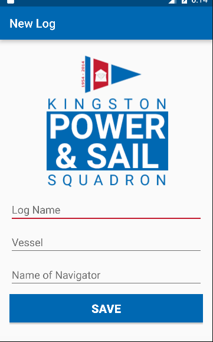
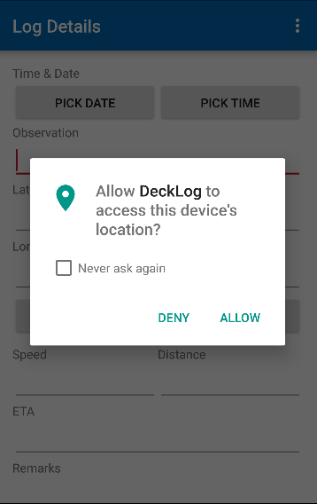

Converting recording coordinates and distance onto paper to the mobile devices
Tools Used: Android Studio, Adobe Photoshop
DeckLog was created during the CodeTheChange: CodeJam 2016 for Kingston Power & Sail. It is an Android app that can track a user's location, and the distance they travelled and stores that information locally. I was responsible for the improving the visuals by modifying or creating graphics and for parts of the front-end such as the logging form.